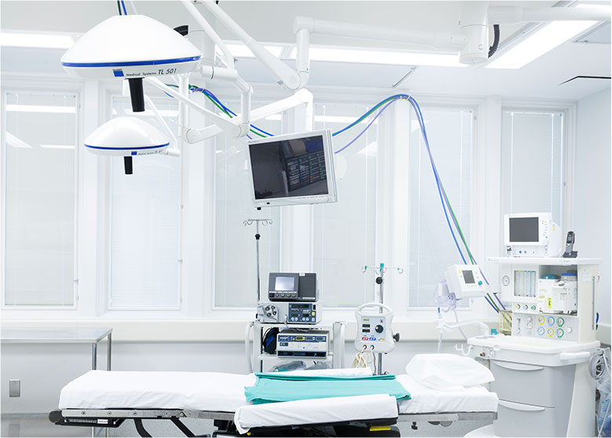

The ASC Advantage
WHAT IS AN ASC? An Ambulatory Surgery Center (ASC) is a health care facility that provides same-day surgical care in an outpatient setting. Outpatient setting means that all procedures and recovery times are less than 24 hours and the patient does basic recovery at home. In other words, ASC-qualifed procedures are procedures that are more intensive that those done in a doctor’s office, but less intense in that they don’t require a hospital stay.
There are significant benefits with having a procedure at an ASC.
Patient Cost Savings
- Medicare pays significantly less for procedures performed in ASCs compared to the rates paid to hospitals for the same procedures.
- On average, the Medicare program and its beneficiaries share in more than $2.6 billion in savings each year because of ASCs lower costs.
- If just half of the eligible surgical procedures moved from hospital outpatient departments to ASCs, Medicare would save an additional $2.4 billion a year.
Patient Satisfaction
- Studies show that patient satisfaction at ASCs are on average 92% higher than at hospitals.
- Patients benefit from the convenience of on-time appointments and onsite parking.
- Complaint rates of less than two per thousand cases are not uncommon.
Provider Satisfaction
- Doctors appreciate how operating rooms in an ASC are often designed for the specific type of procedure that is being performed.
- Equipment and supplies are setup for specific procedures by the same clinical staff who work together on a daily basis.
- Surgery outcomes are more efficient because surgeons know who their clinical staff is, the setup of the OR they are preforming the surgery in, and what equipment they will be using for their surgery.
Management & Ownership
- At an ASC, physicians assume an active role in managing the facility and direct all activities toward achieving maximum patient benefits while maximizing efficiency and minimizing cost.
- Physicians participate in staff selection and equipment purchasing, which allows them to have a greater level of control over their own surgical environment.
- Concerns are quickly addressed by the physicians versus being addressed by the bureaucracy of a hospital administration.
- Physicians shape the outcomes at ASCs, not administrators.
Focused Care Facilities
- ASCs are focused on a limited scope of procedures which promotes higher levels of competence among care providers, increased quality, and improved efficiency.
- Specialization in specific procedures saves both time for the patient and provider as well as money for the patient.